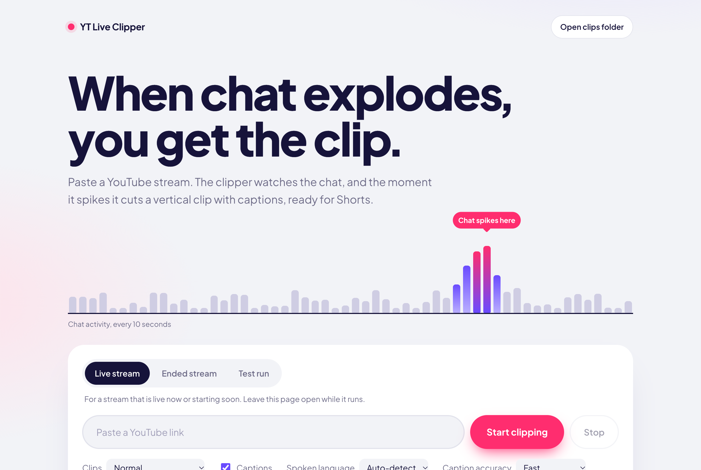

When chat explodes, you get the clip.
YT Live Clipper is a free app for streamers. It watches your YouTube live stream's chat, and when chat spikes it cuts a vertical clip with captions and can post it to your own YouTube channel as a Short.
Download for free
How it works
- Paste your stream link
Live now, starting soon, or a stream that already ended with chat replay.
- Chat spikes become clips
The app counts chat activity every 10 seconds and cuts a 9:16 clip with captions around each spike.
- Post to your channel
Connect your YouTube channel once, and clips are posted with a title, description and tags.
Runs on your own computer
The app is open source and runs entirely on your computer. There is no server and no account with us. When you choose Connect YouTube, you sign in with Google and grant the app permission to:
- Upload videos to your YouTube channel (the clips you choose to post, or every new clip if you turn on automatic posting).
- See your channel's name, so the app can show which channel it is connected to.
Your Google sign-in is stored only on your computer and is never sent to us. You can disconnect at any time. Read the privacy policy for details.
Only post clips you have the rights to: your own streams, or streams whose owner allows clipping.